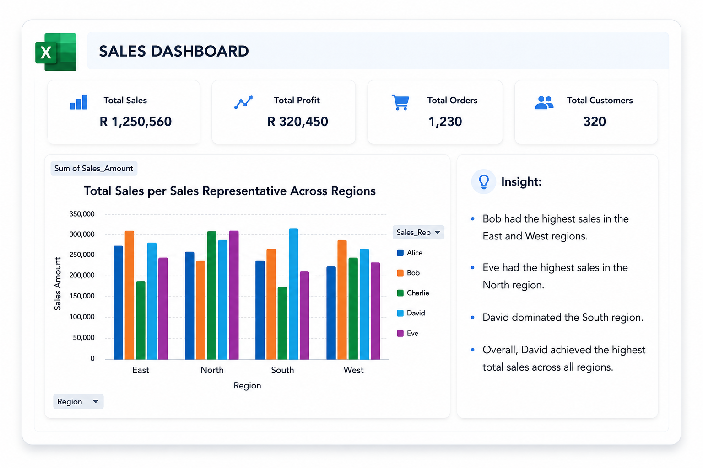
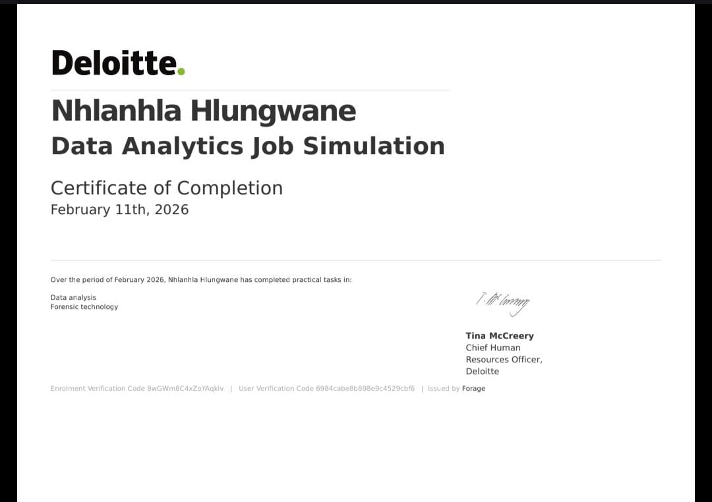

Transforming data into meaningful insights through technology.
Passionate about Business Intelligence, Data Analytics, SQL, and Software Development. I enjoy building data-driven solutions that help businesses make informed decisions.
I am a final-year Bachelor of Science in Information Technology student at North-West University with a strong foundation in software development, SQL databases, web development, and data analysis. I am passionate about Business Intelligence, Data Analytics, and software development, with a strong interest in transforming data into meaningful insights and developing technology-driven solutions that improve business processes. I am a quick learner with strong problem-solving, communication, and teamwork skills, always eager to learn new technologies and contribute to innovative projects.
North-West University, South Africa
Expected Completion: November 2026
Mahonisi Christian Learning Center
Completed: 2022
C#
Java
C++
python
SQL
SQL Server
Database Design
HTML5
CSS3
JavaScript
Visual Studio
VS Code
Git & GitHub
Problem Solving
Communication
Teamwork

Developed an interactive Excel dashboard to analyse sales performance using PivotTables, PivotCharts, slicers and conditional formatting. The dashboard provides valuable business insights through interactive visualisations and supports data-driven decision making.

Successfully completed Deloitte's Data Analytics Job Simulation on Forage, gaining practical experience in data analysis, forensic technology, data interpretation, and business insights.
View CertificateInterested in learning more about my qualifications and experience? You can view or download my Curriculum Vitae below.
Email: hlungwaneangel2@gmail.com
GitHub: github.com/Nhlanhla45604312
LinkedIn: linkedin.com/in/nhlanhla-hlungwane